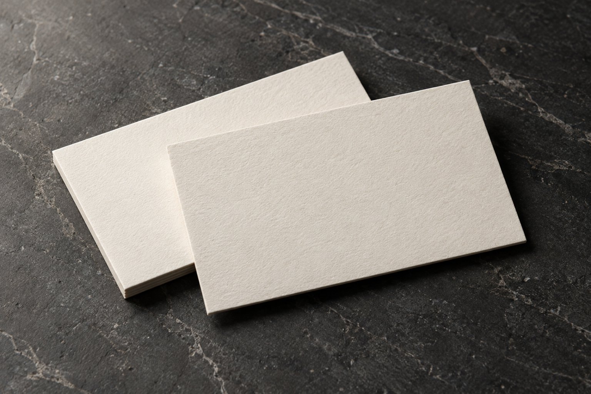
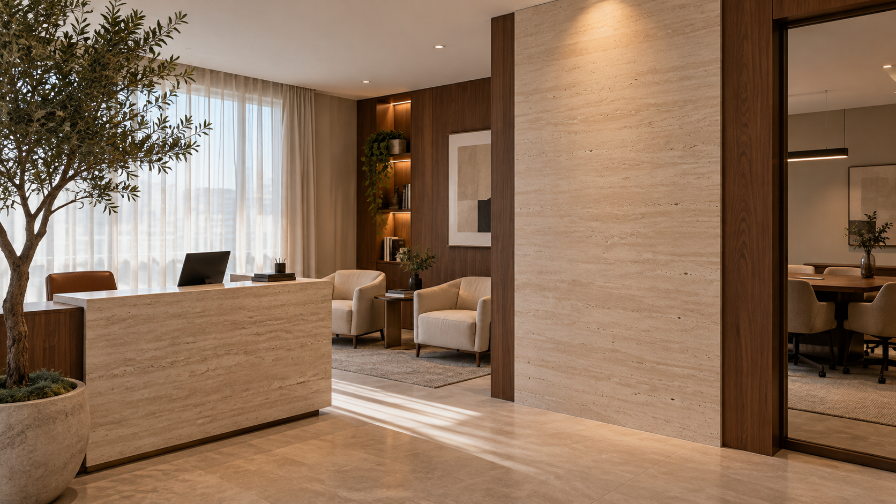
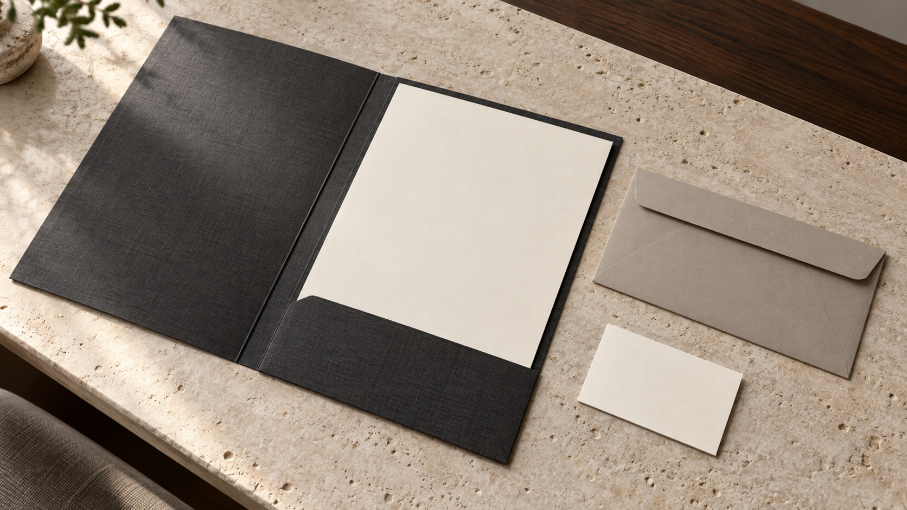
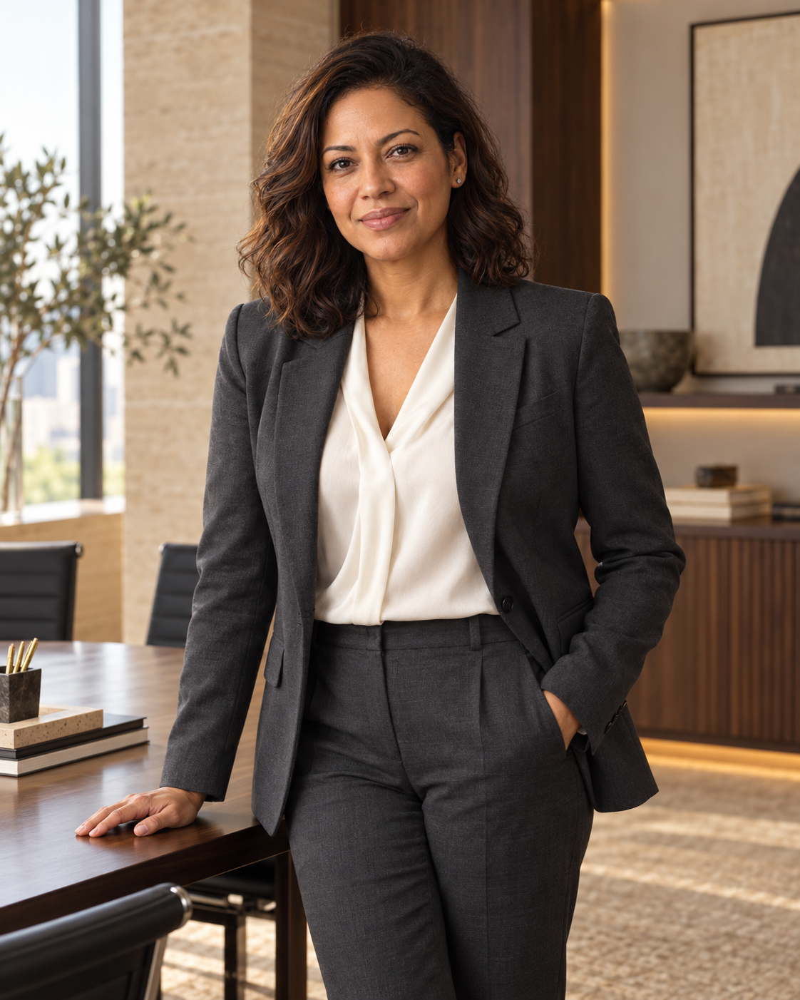

01
Cartão institucional
Algodão marfim, alta gramatura, sombra de contato e impressão preta em escala física contida.
Direção de arte · estudo 02
Uma identidade jurídica de presença contida: tipografia precisa, materiais honestos e espaço suficiente para a marca respirar.
Princípio visual
A marca deixa de funcionar como ilustração monumental e passa a assinar. O contraste vem da proporção entre preto, marfim e fotografia; a sofisticação, do encontro entre papel, pedra, madeira e luz natural.
Sistema de assinatura
Derivados transparentes preservam o desenho original e eliminam o retângulo de fundo. A escala varia conforme a função, nunca por preenchimento de espaço.
Aplicações · estudos conceituais
Cenas-base produzidas primeiro; assinatura original aplicada depois, em composição controlada. Mockups conceituais — não representam escritório ou materiais já executados.

Algodão marfim, alta gramatura, sombra de contato e impressão preta em escala física contida.

Assinatura em metal escurecido, dimensão moderada, relevo e sombra coerentes com a luz da parede.

Pasta de linho carvão, papel natural, envelope cinza-quente e cartão; hierarquia de marca reduzida.
Continuidade fotográfica
A referência-mestra controla rosto, cabelo, idade aparente e figurino. As cenas ampliam a flexibilidade editorial sem fingir uma fotografia real da profissional.
Imagem demonstrativa — personagem fictícia; não é a Dra. Izadora.



Experiência distinta